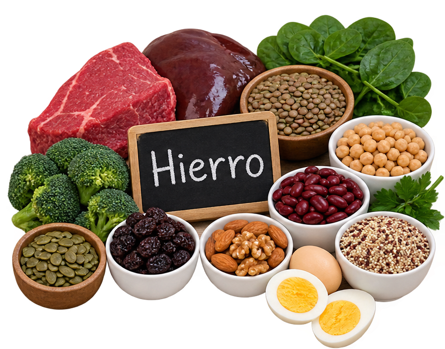

|
Universidad del Bienestar Benito Juárez Tuzantán, San Antonio Xochiltepec Licenciatura en Enfermería y Obstetricia 🩸 ANEMIA EN EL EMBARAZO |
| PRESENTACIÓN | |
| 🏫 Institución: | UBBJ |
| 📚 Materia: | CUIDADO INTEGRAL DE LA MUJER EN EL EMBARAZO, PARTO Y POSPARTO COMPLICADO |
| 👩⚕️ Docente: | LIC. MARÍA ALEJANDRA RODILES DE LEÓN |
| 👥 Integrantes: | EQUIPO 2 |
| 📅 Ciclo escolar: | 2026-1 |
| 🎓 Ciclo: | QUINTO |
| 👩🎓 Grupo: | 2 |
| 🏠 Inicio | 📖 Información | 🔎 Síntomas | 💡 Tips | 🎥 Video |
🌷 Anemia en el embarazo¿Qué es?La anemia durante el embarazo ocurre cuando la sangre no tiene suficiente hemoglobina para transportar adecuadamente el oxígeno al organismo. Durante el embarazo aumentan las necesidades de hierro y otros nutrientes, por lo que es importante mantener una alimentación adecuada y acudir a los controles prenatales. |
🩸
HierroEs necesario para producir hemoglobina y transportar oxígeno. |
🥗
AlimentaciónUna alimentación variada ayuda a cubrir las necesidades nutricionales. |
🩺
Control prenatalPermite detectar alteraciones y dar seguimiento durante el embarazo. |
🔎 Signos y síntomas
|
💡 TIPS PARA CUIDARTE🥗 Mantén una alimentación variada y equilibrada. 🍊 Combina fuentes de hierro con alimentos ricos en vitamina C. 💊 Toma los suplementos únicamente de acuerdo con la indicación del personal de salud. 🩺 Acude regularmente a tus controles prenatales. |

El hierro se encuentra tanto en alimentos de origen animal como vegetal. Entre los principales están carne de res, hígado, pollo, pescado, sardinas y huevo. También aportan hierro alimentos vegetales como lentejas, frijoles, garbanzos, étc.
🎥 Video educativo sobre anemia en el embarazo``` |
|
❤️ RECUERDA
El control prenatal, una alimentación adecuada y el seguimiento de las indicaciones del personal de salud son importantes durante el embarazo. |